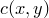
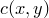
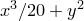

Contour maps are similar to colour maps, but instead of colouring the whole  plane, lines are drawn to indicate paths of constant . The number of contours drawn, and the values
plane, lines are drawn to indicate paths of constant . The number of contours drawn, and the values  that they correspond to, is set using the set contour command, which has the following syntax:
that they correspond to, is set using the set contour command, which has the following syntax:
set contours [ ( <number> |
\( <value> {, <value>} \) ) ]
[ (label | nolabel) ]
If <number> is specified, as in the example
set contours 8
then the specified number of contours are drawn at evenly spaced intervals. Whether the contours are linearly or logarithmically spaced can be changed using the commands
set logscale c1 set linearscale c1
By default, the range of values spanned by the contours is automatically scales to the range of the data provided. However, it may also be set manually using the set c1range command as in the example
set c1range [0:10]
The default autoscaling behaviour can be restored using the command
set c1range [*:*]
Alternatively, an explicit list of the values of for which contours should be drawn may be specified to the set contour command as a ()-bracketed comma-separated list.
If the option label is specified to the set contour command, then each contour is labelled with the value of that it corresponds to. If the option nolabel is specified, then the contours are left unlabelled.
In the following example, a contour map is overlaid on top of a colour map of the function :
set nokey
set size 8 square
plot [-10:10][-10:10] x**3/20+y**2 with colourmap, 
x**3/20+y**2 with contours col green lw 2 lt 1
The contourmap plot style differs from other plot styles in that it is not permitted to take expressions such as $2+1 for style modifiers such as linetype (see Section 1.1) which use additional columns of input data to plot different points in different styles. However, the variable c1 may be used in such expressions to define different styles for different contours:
|
plot ’datafile’ with contourmap linetype $5 |
|
plot ’datafile’ with contourmap linetype c1/10 |
![\includegraphics[width=0.9cm]{cross.eps}](images/img-0029.png)
![\includegraphics[width=0.9cm]{tick.eps}](images/img-0030.png)